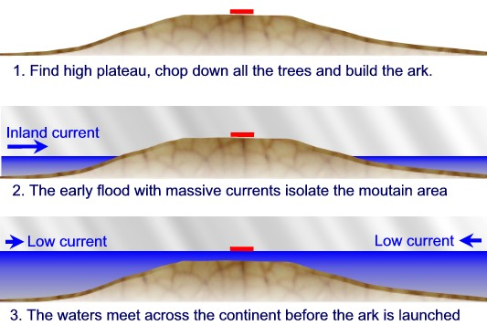
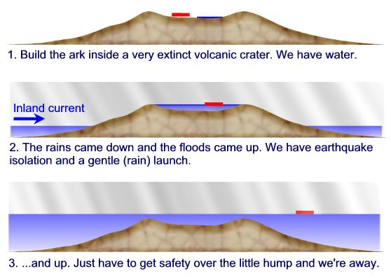

COPYRIGHT Tim Lovett © June 2004
.
.
.
Heavy rain, continental scale flooding, earthquakes, desperate mobs... Not you everyday conditions for launching a ship. What options do we have here?
In regard to the pre-Flood topography, my strong suspicion was that there were highland areas that were not destroyed until late into the cataclysm, and these areas would have been the ones where the flowering plants and mammals, including humans, would have dwelled. Something like this seems to be a logical requirement of the ordering of fossil types we observe in the rock record. So in principle, I do not have any big problem with a delayed launch of the ark well into the 40 days. As to the speeds of the currents, one can look at the sediments laid down during the cataclysm, and especially from the geometry of the crossbedding, estimate the water depth and current speed involved with their deposition. One concludes that speeds of several meters per second were common. It is my feeling that the wave action where the water was shallow was extremely violent throughout the 40 days. It would seem to me that however the ark was launched, it had to get into deeper water very quickly to avoid being destroyed by such violent wave activity. John Baumgardner 03 May 2004. Email correspondence |
1. Mountaintop Launch. With a lower pre-flood topography than we see today, Noah locates the high ground of his day - a wooded plateau of perhaps 1000-2000m or so. The choice seems strange to onlookers and the ark is highly visible during construction. When the flood approaches, the continental scale currents pulverize the lowlands. Once the inland flow meets the waters across the continent the current is arrested and begins to subside. The flood is reaching its peak by the time the ark is launched, with a very low current lifting Noah's vessel from the construction site. (More info). The peak of a mountain is no place to find water, so a hydro powered sawmill will have to be down in the valley.

2. Crater lake. Assuming the tectonic movement associated with the flood cause significant earthquake activity nearby, a mountain crater might be a better choice. The scale of such an area could be quite large, especially assuming the extinct volcano arose in creation week. This area could provide a water source to make life easier during construction. A big plus would be the damping and shock isolation provided by the rain filled crater. It also means the ark is 'launched' before the peak of the flood which is the more conventional reading of Genesis 7:17-20. As with the mountaintop launch, the current has subsided before the flood reaches the level of the crater lake. One problem here is that water power is very limited - the crater lake does not drain anywhere so there cannot be significant flow for harnessing hydro power..

3. Highland Area. The ark is located high enough to avoid the early flood violence but in a 'young' valley draining a substantial plateau catchment area. This siting provides adequate waterflow and potential head for harnessing water power. It is also a likely altitude to find a monoculture pine forest with timber suitable for the majority of the ark construction. Mixed hardwoods might be nearby (perhaps a lower location, or in isolated pockets) for specific applications. The prevailing current also happens to hit the other side of the highland mountain range which shelters the ark a little. However, the ark's location in the 'mouth' of a large valley means there will be some current wanting to take it further into the valley, but the rate of rising floodwaters should have abated somewhat by then and the runoff running in the opposite direction might balance the two.
There is a direct conflict between finding a decent catchment for water power and the flash flood conditions of the deluge rainfall. Water powered sawmills of the 1800's were often washed away for this very reason. While the demolition of Noah's sawmill is to be expected, the flash flood risk forces the ark to be some distance away from the water-powered sawmill. The scale of the necessary catchment also presents a problem with inhabitants surviving the early stages of the deluge. Baumgardner's suggestion that humans made it to higher ground as a mechanism for the lack of humans in the fossil record means they were not suddenly covered by sediment like the dumb animals who didn't see it coming. However, this begins to conflict with a large catchment unless the whole area is isolated from the civilization in the lowlands.